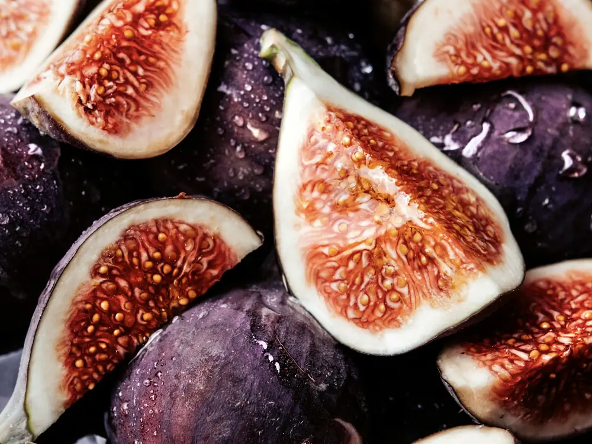
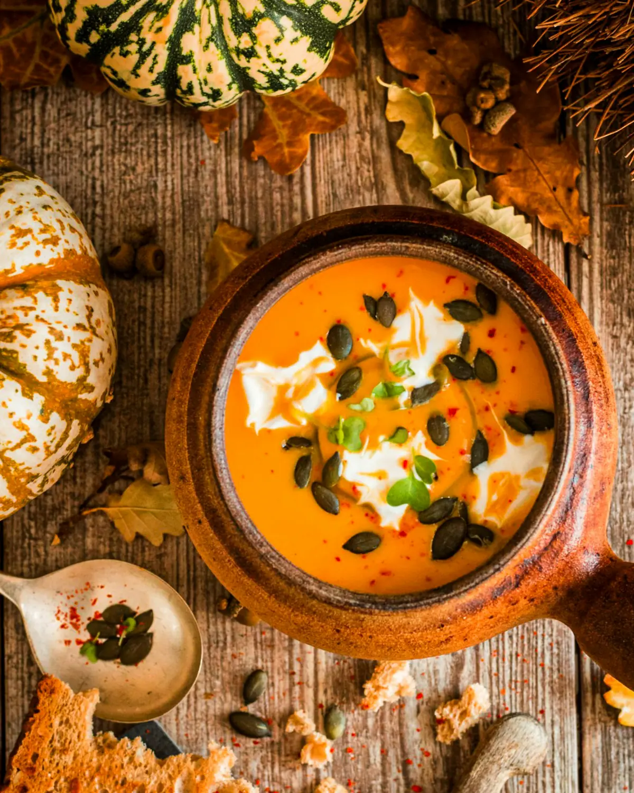
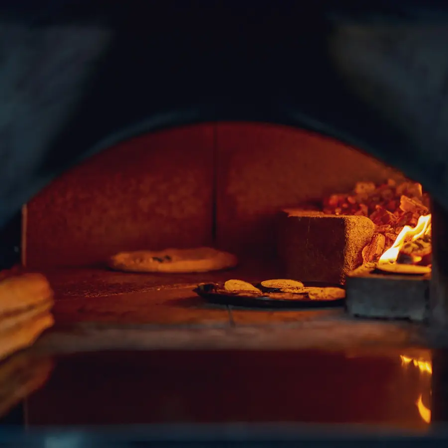
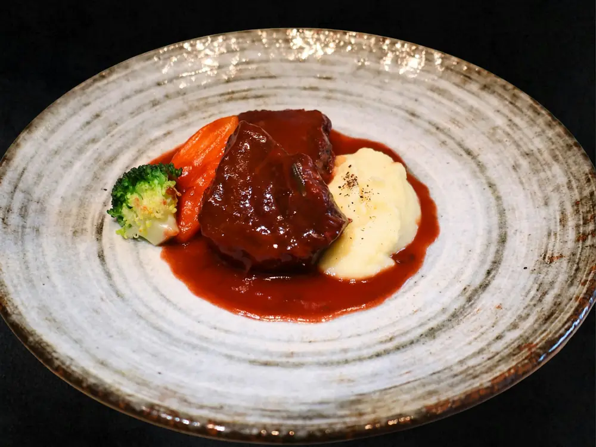
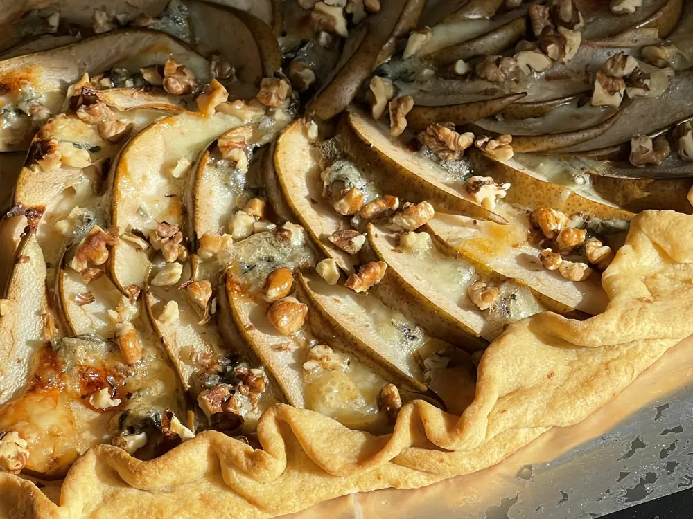
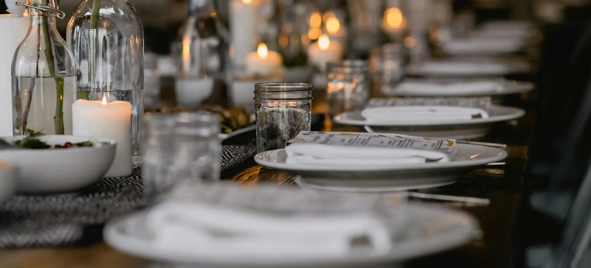
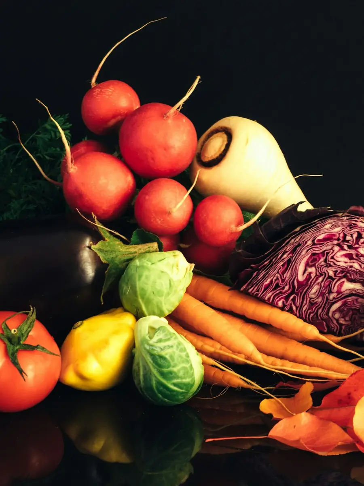
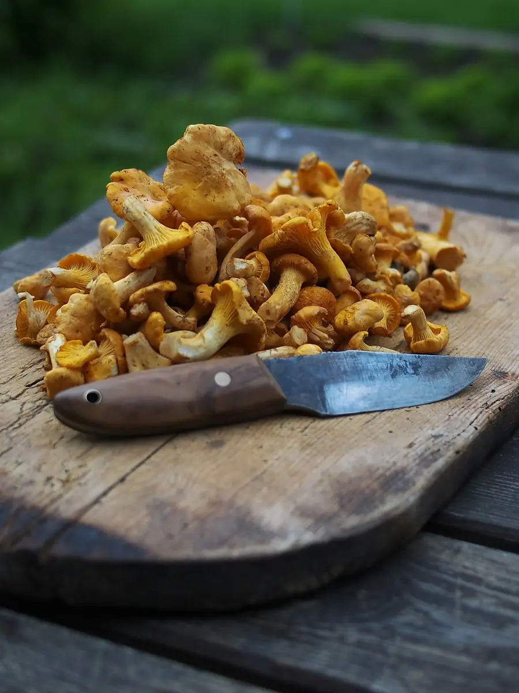
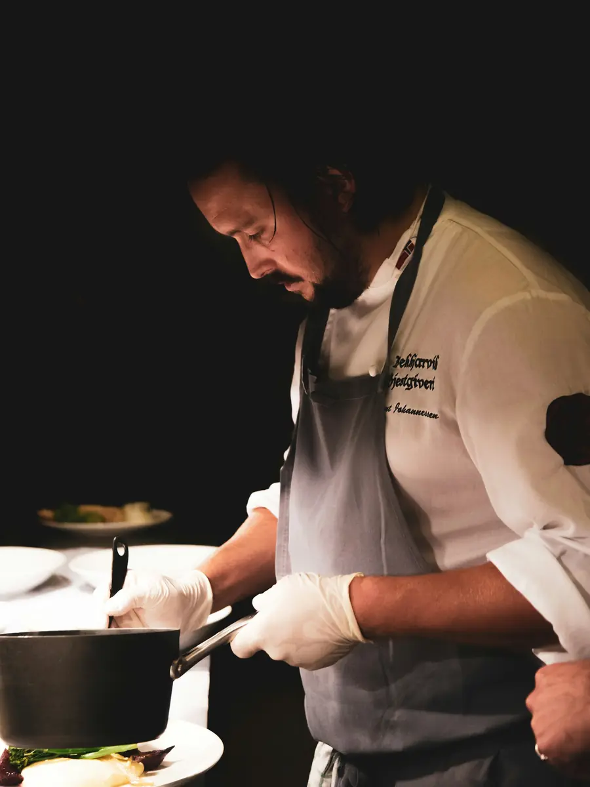
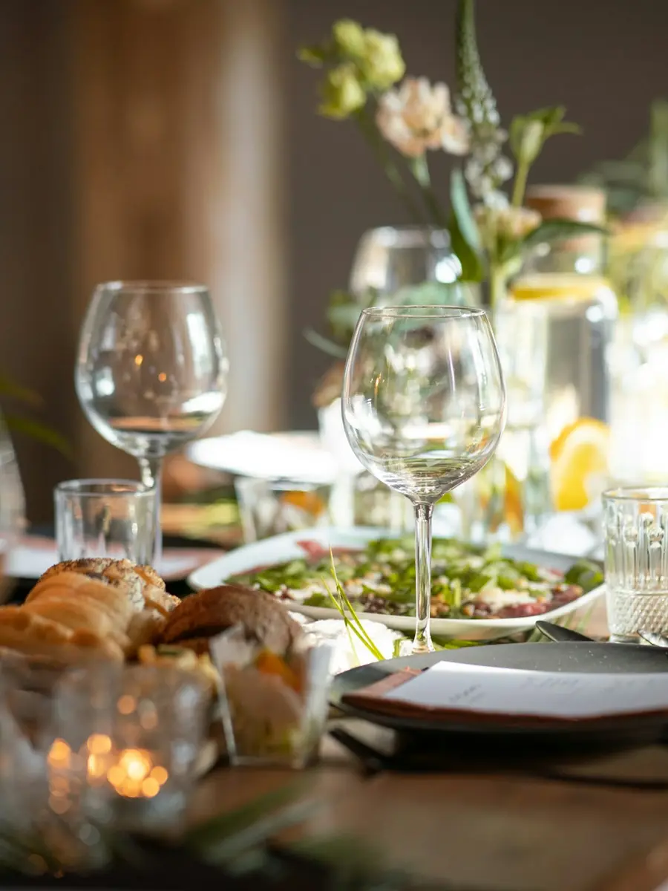

Entrées
Velouté de potimarronchâtaignes grillées, huile de noisette
9Œuf parfaitgirolles, jus de volaille, persil
12Burrata de la Drômefigues rôties, miel de thym
13
Mardi à samedi, midi et soir
Maison Alba est un bistrot de vingt couverts, rue des Tanneurs à Lyon. Le menu s’écrit chaque matin, après le marché.


Velouté de potimarron9 €
Six plats, pas un de plus. Formule du midi en semaine : entrée et plat, ou plat et dessert, 22 €.

Velouté de potimarronchâtaignes grillées, huile de noisette
9Œuf parfaitgirolles, jus de volaille, persil
12Burrata de la Drômefigues rôties, miel de thym
13
Pot-au-feu de joue de bœuflégumes racines, bouillon clair
24Dos de cabillaudrisotto d’orge, beurre blanc citronné
26Gnocchis au fourcourge, sauge, vieux comté
19
Tarte fine aux poirescrème d’amande, glace vanille
9Mousse au chocolat noirfleur de sel, pain grillé
8Fromages affinéssélection de la crémerie Duval
11
« Le soir, la salle s’éclaire aux bougies et à la braise du four. On s’assoit, on ne regarde plus l’heure. »
Du marché au dernier service, ce qui se passe avant que vous poussiez la porte.




Camille et Théo ont ouvert Maison Alba en 2019, dans une ancienne boulangerie de la rue des Tanneurs. Le four est resté dans la salle : il cuit le pain l’après-midi, les gnocchis et les légumes le soir.
Le menu change chaque semaine, parfois chaque jour, selon ce qui arrive des fermes autour de Lyon. Douze producteurs livrent en direct, deux fois par semaine. Voici ceux de cette carte.
La salle compte sept tables et vingt couverts. Touchez celle que vous voulez, on la note dans votre demande.